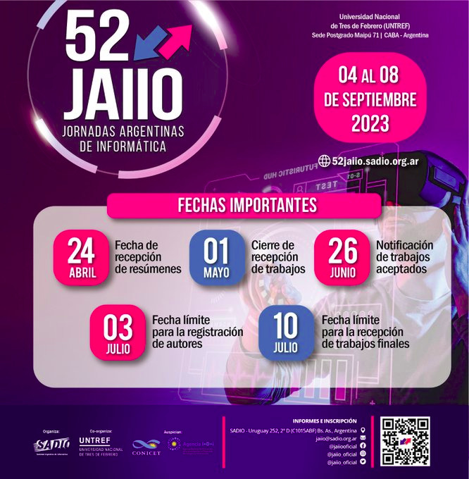

Memorias de las JAIIO
Ya se encuentran publicadas las Memorias de las JAIIO (sadio.org.ar) con todos los trabajos expuestos en las Jornadas!
Las JAIIO en números
Recibimos un total de 359 trabajos, de los cuales se aprobaron 209 para ser expuestos. A esto se sumaron 64 actividades más, entre conferencias de expertos, paneles de discusión, tutoriales y presentaciones de sponsors.
Fueron, en síntesis, 273 ponencias y actividades a lo largo de la semana, y la oportunidad para escuchar a reconocidos expositores nacionales y extranjeros, e intercambiar opiniones y experiencias con colegas de las más diversas localizaciones.
PROGRAMA PRELIMINAR DE LAS 52 JAIIO
¿Querés ver el horario de tu exposición? ¿las conferencias que hay pensadas para vos? ¿las distintas charlas que se van a desarrollar?
https://programa.kingconf.com/AcEventId=864fef96-d9cb-45f3-9060-182b960cdd44
Lista de trabajos aprobados (Información Preliminar)
https://52jaiio.sadio.org.ar/Trabajos_aprobados_preliminar
Organización diaria por simposios (preliminar)
https://52jaiio.sadio.org.ar/Simposios/Simposios_Dias
Postergamos la fecha de inscripción de autores y la fecha de inscripción temprana!!
Ahora tenés tiempo de inscribirte hasta el 10 de Julio de 2023.
Ya se encuentra disponible el formulario de inscripción a las 52 JAIIO!
Para inscribirte ingresá a https://52jaiio.sadio.org.ar/inscripcion
Para ver los aranceles de inscripción https://52jaiio.sadio.org.ar/aranceles
Nos complace contarles que hemos recibido más de 370 trabajos, los cuales ya se encuentran en evaluación. Las propuestas provienen de Argentina, Brasil, Chile, Colombia, Costa Rica, Ecuador, España, Estados Unidos, Guatemala, Mexico, Perú, Uruguay entre otros más.
Gracias a todos por su aporte, que hará de estas JAIIO un evento imperdible!
Mientras tanto, los invitamos a visitar las memorias de la edición 2022 https://publicaciones.sadio.org.ar/index.php/JAIIO/about
IMPORTANTE! Extendemos las fechas límites para el envío de resúmenes y artículos.
Enviá tu resumen antes del 01 de Mayo de 2023!!
Enviá tu trabajo antes del 08 de Mayo de 2023 12 de Mayo de 2023!!
https://52jaiio.sadio.org.ar/fechas_importantes
.jpg)
Ya se encuentra disponible el sistema para el envío de trabajos para las 52 JAIIO (http://52jaiio.sadio.org.ar/envio).
Enviá tu resumen antes del 24 de abril 2023!!


01/03/2023

Ya se encuentran disponibles los calls for papers de cada simposio en https://52jaiio.sadio.org.ar/simposios